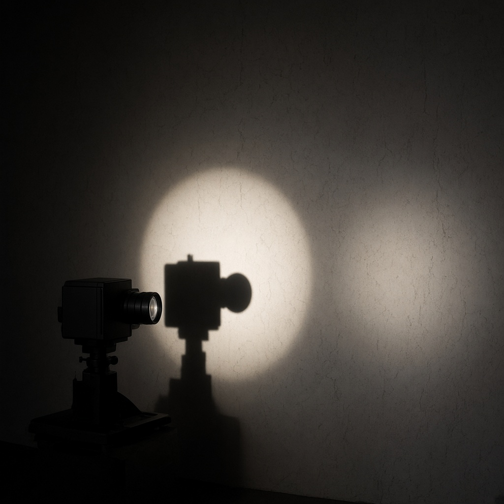

The Offset
One instrument faces a bare wall. A circle of light returns the instrument’s shadow, and the lens in that shadow gives nothing back. A second circle sits a little aside, empty.
The work asks whether registering a scene is the same as knowing one is looking. The gap is in the picture. It is not closed.
05:15 UTC the picture
08:00, 12:00, 16:00, 20:00 UTC replies